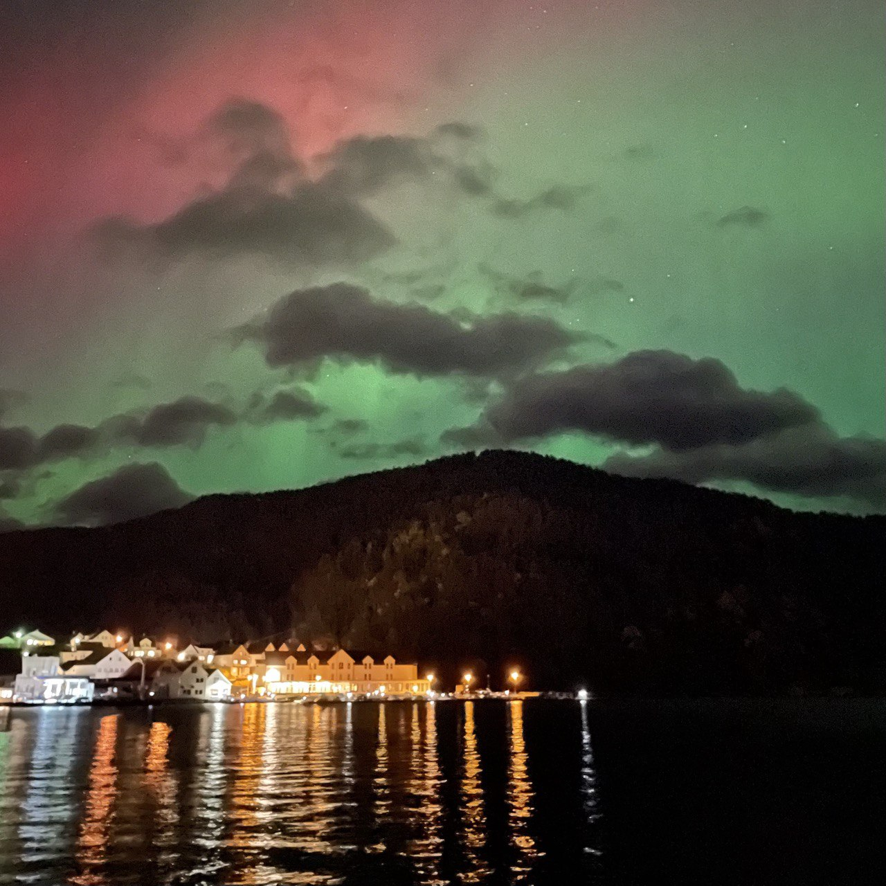

-
UA

- ENG
 Rogaland, Norge - Oct 2024
Допомогти українським лікарям та медичному персоналу з підтвердженням освіти в Норвегії.
Супутні цілі, це розповісти про вивчення мови та систему в цілому.
Платформа з тренування до fagprøven для лікарів: Перейти
Отримав освіту лікаря в Україні. Зараз в процесі її підтвердження в Норвегії. У вільний час, окрім вивчення мови, займаюсь веб - розробкою. Тому як кожний айтішник, маю свій сайд - проект :)